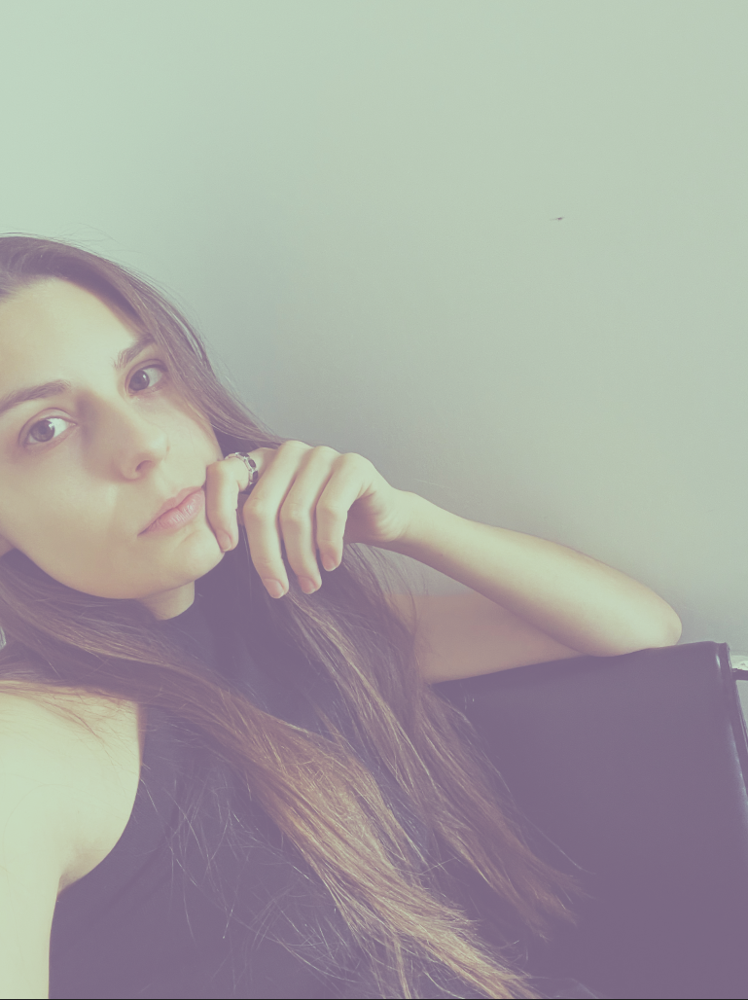

contact: enicollart[at]gmail[dot]com
bookings: emily[at]aquaregiarecords[dot]com
twitter ↗
instagram art ↗
instagram personal ↗
EMILY NICOLL is the founder, curator, and label manager of Aquaregia Records, a Toronto-based imprint she launched in 2015 to champion her deep-rooted love for acid-inflected techno. Across the label's discography, she's cultivated a distinct sonic and visual identity. Each release is paired with her own original artwork, extending the music's mood into a parallel visual dimension.
Her practice moves fluidly between disciplines: as a visual artist, she works under the name ENICOLL, creating digitally layered compositions that blend digital and analogue techniques. Her work often explores organic motifs and psychedelic geometries, drawing from both natural forms and the abstracted language of club culture. This unique blend has shaped the evolving aesthetic of Aquaregia, where the visuals and sound are always in conversation.
As a DJ, Emily is known for her hypnotic sets: propulsive, cerebral journeys through techno's deeper edges, where mechanical rhythms lock in and time begins to stretch. Her selections often lean left of centre, reflecting a decade-long commitment to her sound and a collector's ear for timel